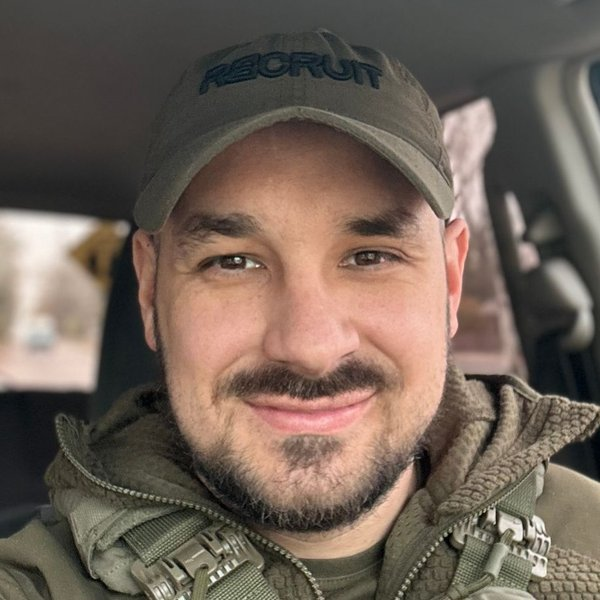

Групи підтримки для ветеранів і військових
Спільноти, які регулярно збираються онлайн та офлайн. Їх об'єднує спільний травматичний досвід, і вони стають місцем безпеки, розуміння, підтримки та зцілення.
Діє · Онлайн і офлайн
Досягаємо діючих військовослужбовців, ветеранів та їхніх близьких для Христа й допомагаємо їм зростати у вірі.
Гортайте, щоб дізнатися більшеМи — спільнота ветеранів, діючих військових, їхніх рідних і небайдужих людей, які прагнуть служити військовим, ветеранам та їхнім сім'ям. Разом ми проходимо крізь травми війни, розвиваємо рух учнівства та благовістя, зцілюємося від війни й відновлюємо Україну.
Матеріали, стратегії, проєкти — це все інструменти. Головне — люди.
Локація нас не обмежує. Головне — бажання долучитися й бути в спільноті, а як це зробити, ми вирішимо разом.
Онлайн та офлайн
Україна й Європа
Співробітники служіння та ключові волонтери живуть у Києві, Львові, Черкасах, Івано-Франківську, Мукачеві та Будапешті.
Маємо групи підтримки наживо в Черкасах і Мукачеві, онлайн-групи для різних категорій ветеранів, ретрити в Україні та за кордоном, а також перекладаємо й поширюємо матеріали про роботу з травмою для дорослих і дітей.
П'ять напрямів, через які ми супроводжуємо військових, ветеранів та їхніх рідних
Спільноти, які регулярно збираються онлайн та офлайн. Їх об'єднує спільний травматичний досвід, і вони стають місцем безпеки, розуміння, підтримки та зцілення.
Діє · Онлайн і офлайн
Група підтримки — безпечний простір для рідних військових і для кожного, кого торкнулася війна.
Діє · Черкаси
Постійна серія ретритів і проєктів для ветеранів — щоб відпочити, знайти нові сенси та внутрішні сили.
Діє · Європа
Спільний подкаст з Українською баптистською теологічною семінарією (УБТС). Ветерани й військові чесно розповідають про війну, втрати, поранення, віру й шлях до відновлення — без броні.
Слухати випускиЗ 2014 року служіння перекладає, адаптує й поширює матеріали для роботи з травмою, а також проводить навчальні конференції про роботу з травмою, військовими та ветеранами.
Діє · З 2014 року
Розмови з ветеранами, військовими медиками та їхніми рідними — про те, що війна забирає, і про Бога, Який повертає надію. Подкаст ми робимо разом з УБТС.
Михайло
Військовий медик, лікар-анестезіолог
Михайло — військовий медик із Мукачева. Одинадцять років війни він бачив очима лікаря-анестезіолога.
У подкасті «Без броні» він поділився своїм досвідом війни та віри. Його історія — одна з багатьох, заради яких існує наше служіння.
За збереження життя кожного члена команди й волонтера та за сили для кожного долати травми війни.
За масштабування та вдосконалення стратегії ретритів для ветеранів.
За наявні групи підтримки та нові спільноти ветеранів.

Лідер військового служіння
Ветеран, учасник АТО 2014–2015 років. У 2022–2025 роках знову служив у ЗСУ, звільнився зі служби у званні майора.
roman.pikulik@cru.orgПишіть, якщо не знаєте, до кого звернутися, — ми скеруємо.
Матеріали, книги, група підтримки в Черкасах.
«Матеріали, стратегії, проєкти — це все інструменти. Головне — люди»